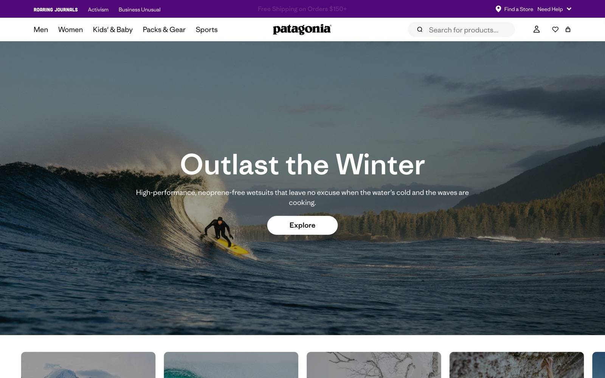
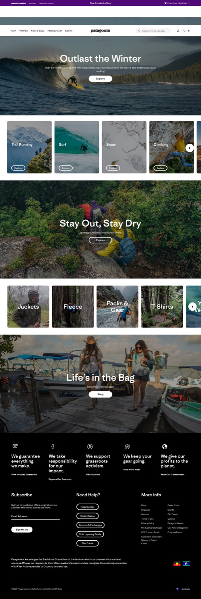

A descriptive read of the home page as it ships today, surfaced for the redesign brief. Black, white, eggplant. Ridgeway Sans across the system. Photographic tile density.
patagonia.com) was returning a 200-OK overload page ("Hang Tight! Routing to checkout...") on every request — and on every Wayback capture for the past 18 months — so brand surface was extracted from patagonia.com.au, which serves the same global Patagonia design system in English.
Same typography (Ridgeway Sans), same component vocabulary, same eggplant ribbon, same dual-radius CTA pattern. The IA on .com is broader (Men/Women/Kids/Sport/Activism/Stories nav + sale/clearance), but the visual system is shared.
Cross-page brand aggregation is therefore not available; values reported below are home-page modes weighted by element count.

Above the fold — eggplant ribbon, centred wordmark header, full-bleed photo hero ("Outlast the Winter") with white pill CTA over imagery (no scrim).

Full page — hero → 6-up activity tiles → secondary photo hero → 6-up category tiles → "Life's in the Bag" hero → 5-column values row → dense mega-footer.
Black-and-white-and-one-colour. Eggplant #500778 is structural and reserved for the activism ribbon. Photography supplies all other chroma.
Source: _brand-extraction.json § palette
Ridgeway Sans (a humanist sans drawn for the brand) carries the entire system at three weights — 400, 500, 700. The wordmark is a separate custom historical letterform.
| Role | Family | Weights | Sizes seen |
|---|---|---|---|
| Heading | Ridgeway Sans | 400 / 500 / 700 | 64 · 40 · 30 · 24 · 18 |
| Body | Ridgeway Sans | 400 / 500 | 16 · 14 · 18 |
| Wordmark | Custom (lowercase serif-cut) | — | Header lockup |
Source: _brand-extraction.json § type
Two radius systems live side by side: 8px squared-off photographic tiles and 36px pill CTAs. This dual-radius pattern is one of the brand's defining visual moves.
Used over photographic heroes and tile labels. Solid white pill is the primary; solid black pill is the secondary.
Activity and category tiles. Note the forest-green-tinted shadow.
Hard 1px black border, no fill, no rounded corners. Utilitarian — deliberate counterpoint to the soft pills.
| Block | Kind | What it carries |
|---|---|---|
| utility-ribbon | header | Roaring Journals · Activism · Business Unusual + announcement string. Eggplant. Site-wide. |
| primary-header | header | Centred wordmark, 5-item primary nav (Men/Women/Kids/Packs & Gear/Sports), search/account/wishlist/cart icons. |
| full-bleed-photo-hero | region | Single full-bleed photograph, white headline, white pill CTA, no scrim. |
| activity-tile-grid | region | 6-up photographic tiles (Trail Running / Surf / Snow / Climbing / Mountain Biking / Fly Fishing). |
| category-tile-grid | region | 6-up product-category tiles (Jackets / Fleece / Packs & Gear / T-Shirts / Yulex Wetsuits / Workwear). |
| secondary-photo-hero | region | Stay Out Stay Dry · Life's in the Bag — break up the tile grids. |
| values-row | cta-band | 5-column row of brand pillars + read-more links. |
| mega-footer | footer | Black ground, white type, Subscribe + Need Help + More Info. |
Five short declarative pillars sit above the footer. Plainspoken, no qualifiers. This block is one of the brand's most recognisable surfaces.
The hero CTA is a white pill set on a photographic background; the headline is white type sitting directly over the image. Readability is photo-dependent — when the photo is light or contrast-low, the hero loses force. The pill CTA over imagery is fine; the unscrimmed white headline isn't always.
Captured heading sizes (64, 40, 30, 24, 18) follow no consistent ratio (1.60, 1.33, 1.25, 1.33). The home reads orderly because Ridgeway is doing the heavy lifting, but the underlying scale is opportunistic. A small refinement here would tighten visual rhythm without changing the brand's character.
The site ships zero CSS custom properties at :root. Colour, type, spacing, radii are declared in stylesheets but not exposed as tokens. For a brand at Patagonia's scale this is friction — a redesign should ship a token contract from day one.
The home page surfaces 28 button-shaped CTAs above the fold, of which 14 are labelled "Explore" verbatim. Verb compression is a brand voice signal (Patagonia is comfortable repeating words), but the practical effect is that the page invites clicks without distinguishing between them. The redesign can keep the plain register and add lightweight differentiation (object-of-the-CTA, eyebrow label) without going floral.
The activism / journalism / Business-Unusual cross-promo lives entirely in a 12px-tall band of eggplant at the very top of the page. Brand-wise this is the most distinctive surface; design-wise it's the smallest. There is room to elevate the activist content (which the brand cares about most) without pulling it into the commerce nav.
| Element | Stance for the redesign |
|---|---|
| Eggplant utility ribbon at the very top | Keep verbatim. Brand-defining. Never soften, never relocate to footer. |
| Centred Patagonia wordmark in the header | Keep. Wordmark is a 50-year asset; centring is the brand's masthead. |
| Full-bleed photographic hero | Keep. Photography is the brand's emotional engine. |
| Six-up dense activity + category tile grids | Keep dense. Density is the gear-page register; do not editorialise into 3-up airy. |
| Pill CTAs over squared photographic tiles (dual-radius) | Keep. Signature move. |
| Five-column values row | Keep, possibly elevate. Brand pillars are a load-bearing surface. |
| Black mega-footer | Keep. Anchors the page weight. |
| Hero white headline without scrim | Refine. Add a subtle gradient scrim or float a tiny ground panel under the type. |
| Type size scale | Refine. Snap to a single modular ratio (1.25 or 1.333). |
| Empty design tokens | Add. Ship a token contract. |
| "Explore"-only CTA verb on every tile | Refine lightly. Add an eyebrow or object label without going marketing-flowery. |